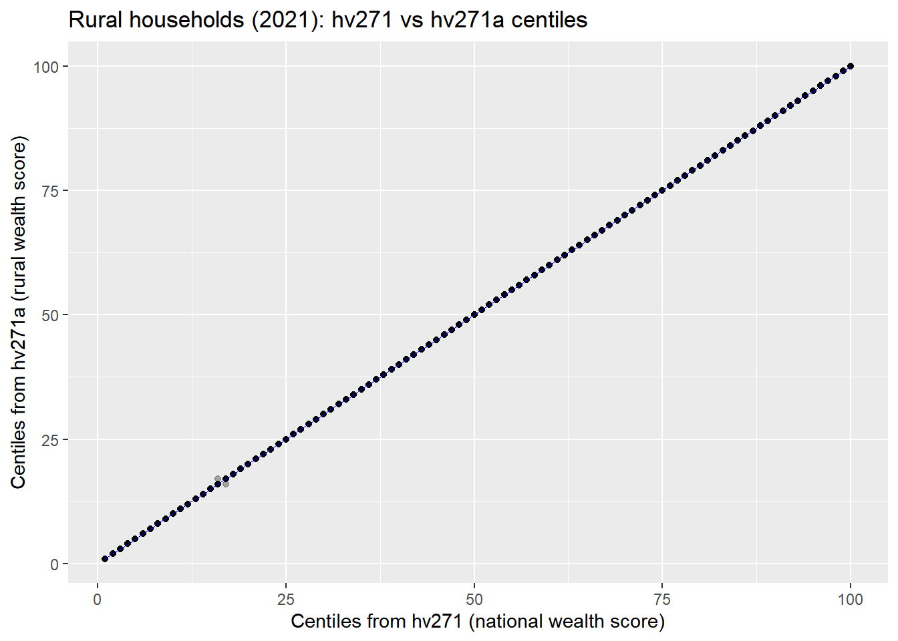

This section documents the process of reconstructing and analyzing wealth indexes for a forthcoming study focusing on rural populations in Madagascar. Wealth indexes, particularly the wealth index factor scores, are critical for assessing household living standards and analyzing inequalities.
The wealth index, provided in DHS, is constructed using principal components analysis on household characteristics such as asset ownership, housing materials, and access to water and sanitation facilities. We want a centile classification specific to rural households.
5.1 Verification that rural wealth centiles can be derived from existing DHS data
We first check whether the centile classification of households is consistent between the national wealth score (hv271) and the rural-specific wealth score (hv271a). The comparison is done for rural households in the 2021 DHS. Both indices are transformed into centiles, and we examine their agreement through simple proportions, correlation, and a scatterplot.
cor.test(hh21_rur$c_hv271, hh21_rur$c_hv271a,method ="spearman", use ="complete.obs")
Spearman's rank correlation rho
data: hh21_rur$c_hv271 and hh21_rur$c_hv271a
S = 47437, p-value < 2.2e-16
alternative hypothesis: true rho is not equal to 0
sample estimates:
rho
0.9999999
Code
# Scatterplot with both axesggplot(hh21_rur, aes(x = c_hv271, y = c_hv271a)) +geom_point(alpha =0.3) +geom_smooth(method ="lm", se =FALSE, linewidth =0.3, color ="blue") +labs(title ="Rural households (2021): hv271 vs hv271a centiles",x ="Centiles from hv271 (national wealth score)",y ="Centiles from hv271a (rural wealth score)" )

The results show near-perfect agreement between the two indices, confirming that the national wealth index can be used directly to reconstruct rural centiles, without loss of consistency. This greatly simplifies the treatment of earlier surveys (MIS 2011, 2013, 2016), where domain-specific wealth scores are not provided.
5.2 Construction of rural wealth centiles across DHS surveys
For comparability over time, we rely directly on the DHS wealth score (hv271) available in each household dataset. In the 1997 DHS, the wealth index is stored separately and must be merged by household identifier. For subsequent surveys (2008–2021), it is included directly in the household file.
We then define a single function that filters rural households and computes both unweighted centiles (using ntile()) and weighted centiles that respect the DHS survey design. Weighted centiles are calculated with the survey package using the household sampling weights (hv005). To avoid problems with ties in the weighted quantile thresholds, we add an infinitesimal offset to ensure strictly increasing cut-points.
Code
# In 1997, the wealth indexes are stored in a separate filewi97 <-read_dta("data/raw/dhs/DHS_1997/MDWI31DT/MDWI31FL.DTA") %>%select(whhid, hv271 = wlthindf) %>%mutate(whhid =str_trim(whhid, side ="left"))hh97 <-read_dta("data/raw/dhs/DHS_1997/MDHR31DT/MDHR31FL.DTA") %>%select(hv001, hv002, hv005, hv025) %>%mutate(whhid =paste0(hv001, str_pad(as.character(hv002), width =2, side ="left", pad =" ")))%>%inner_join(wi97, by ="whhid")# Load the othershh08 <-read_dta("data/raw/dhs/DHS_2008/MDHR51DT/MDHR51FL.DTA") %>%select(hv001, hv002, hv005, hv025, hv271)hh11 <-read_dta("data/raw/dhs/DHS_2011/MDHR61DT/MDHR61FL.DTA") %>%select(hv001, hv002, hv005, hv025, hv271)hh13 <-read_dta("data/raw/dhs/DHS_2013/MDHR6ADT/MDHR6AFL.DTA") %>%select(hv001, hv002, hv005, hv025, hv271)hh16 <-read_dta("data/raw/dhs/DHS_2016/MDHR71DT/MDHR71FL.DTA") %>%select(hv001, hv002, hv005, hv025, hv271)hh21 <-read_dta("data/raw/dhs/DHS_2021/MDHR81DT/MDHR81FL.DTA") %>%select(hv001, hv002, hv005, hv025, hv271)rural_centiles <-function(df) {# filter rural only df_rur <- df %>%filter(hv025 ==2)# weighted centiles df_rur <- df_rur %>%mutate(.w = hv005 /1e6) des <-svydesign(ids =~hv001, weights =~.w, data = df_rur) qs <-svyquantile(~hv271, des,quantiles =seq(0.01, 1, 0.01),ci =FALSE, na.rm =TRUE)# Avoid ties for weighted centiles thr <-as.numeric(qs[[1]]) +seq_along(qs[[1]]) *1e-10 df_rur %>%mutate(wealth_centile_rural_weighted =cut(hv271, breaks =c(-Inf, thr),labels =1:100, include.lowest =TRUE, right =TRUE) %>%as.integer(),wealth_centile_rural_simple =ntile(hv271, 100) ) %>%select(-.w)}add_zscore_from_centile <-function(df, centile_col, cluster_col, zscore_col ="zscore_wealth") { stats <- df %>%group_by(.data[[cluster_col]]) %>%summarise(m =mean(.data[[centile_col]], na.rm =TRUE),s =sd(.data[[centile_col]], na.rm =TRUE),.groups ="drop") df %>%left_join(stats, by = cluster_col) %>%mutate(!!zscore_col :=ifelse(!is.na(s) & s >0, (.data[[centile_col]] - m) / s, NA_real_)) %>%select(-m, -s)}# Applyhh97_rur <-rural_centiles(hh97) %>%add_zscore_from_centile("wealth_centile_rural_weighted", "hv001")hh08_rur <-rural_centiles(hh08) %>%add_zscore_from_centile("wealth_centile_rural_weighted", "hv001")hh11_rur <-rural_centiles(hh11) %>%add_zscore_from_centile("wealth_centile_rural_weighted", "hv001")hh13_rur <-rural_centiles(hh13) %>%add_zscore_from_centile("wealth_centile_rural_weighted", "hv001")hh16_rur <-rural_centiles(hh16) %>%add_zscore_from_centile("wealth_centile_rural_weighted", "hv001")hh21_rur <-rural_centiles(hh21) %>%add_zscore_from_centile("wealth_centile_rural_weighted", "hv001")# Writewrite_rds(hh97_rur, "data/derived/hh_1997_rural_simpler.rds")write_rds(hh08_rur, "data/derived/hh_2008_rural_simpler.rds")write_rds(hh21_rur, "data/derived/hh_2021_rural_simpler.rds")write_rds(hh16_rur, "data/derived/hh_2016_rural_simpler.rds")write_rds(hh13_rur, "data/derived/hh_2013_rural_simpler.rds")write_rds(hh11_rur, "data/derived/hh_2011_rural_simpler.rds")
5.3 MICS 2018: Rural Wealth Centiles
We extend our analysis by incorporating the 2018 MICS survey for Madagascar, which includes a national wealth score (wscore) and a rural-specific wealth score (wscorer). We compute unweighted and weighted rural centiles based on the national score to ensure consistency with the DHS-based measures (which quantile and cut the same score, hv271).
Code
# Load MICS 2018 household datahh18 <-read_spss("data/raw/mics/2018/SPSS datasets/hh.sav")# Restrict to rural households and compute centiles from national and rural scoreshh18_rur <- hh18 %>%filter(HH6 ==2) %>%# Rural onlytransmute( HH1, HH2, HH6, HH5Y, stratum, wscorer, wscore,PSU =as.integer(PSU), hhweight)des <-svydesign(ids =~PSU, weights =~hhweight, data = hh18_rur)# Weighted centile thresholds: computed on wscore (the national score actually# cut below), consistent with the DHS-side rural_centiles() which quantiles hv271qs <-svyquantile(~wscore, des, quantiles =seq(0.01, 1, 0.01),ci =FALSE, na.rm =TRUE)thr <-as.numeric(qs[[1]]) +seq_along(qs[[1]]) *1e-10# Add the datahh18_rur <- hh18_rur %>%mutate(wealth_centile_rural_weighted =cut(wscore, breaks =c(-Inf, thr),labels =1:100, include.lowest =TRUE, right =TRUE),wealth_centile_rural_weighted =as.numeric(wealth_centile_rural_weighted),wealth_centile_rural_simple =ntile(wscore, 100)) %>%add_zscore_from_centile(centile_col ="wealth_centile_rural_weighted", cluster_col ="PSU", zscore_col ="zscore_wealth") # Rename as in the dhs surveyxhh18_rur <- hh18_rur %>%select(hv001 = PSU, # clusterhv002 = HH2, # household numberhv005 = hhweight, # household weighthv025 = HH6, # urban/rural indicatorhv271 = wscore, # wealth score wealth_centile_rural_weighted, wealth_centile_rural_simple, zscore_wealth) %>%mutate(hv005 =as.integer(hv005 *1e6)) # To imitate DHS weights# Writewrite_rds(hh18_rur, "data/derived/hh_2018_rural_simpler.rds")
The preregistered H2 outcome remains the signed within-cluster z score computed above — (wealth_centile_rural_weighted - cluster_mean) / cluster_sd, no abs(), no substitution. Because clusters contain only about 20 to 30 households, a small-sample Gini would be unstable; as supplementary descriptive diagnostics only (not preregistered outcomes), we add two cluster-level dispersion measures of the unnormalized rural wealth centile: wealth_sd_cluster and wealth_iqr_cluster.
Code
wave_files <-c("1997"="data/derived/hh_1997_rural_simpler.rds","2008"="data/derived/hh_2008_rural_simpler.rds","2011"="data/derived/hh_2011_rural_simpler.rds","2013"="data/derived/hh_2013_rural_simpler.rds","2016"="data/derived/hh_2016_rural_simpler.rds","2018"="data/derived/hh_2018_rural_simpler.rds","2021"="data/derived/hh_2021_rural_simpler.rds")wealth_dispersion_clusters <-imap_dfr(wave_files, function(path, yr) {read_rds(path) |>group_by(hv001) |>summarise(DHSYEAR =as.integer(yr),n_hh_cluster =n(),wealth_sd_cluster =sd(wealth_centile_rural_weighted, na.rm =TRUE),wealth_iqr_cluster =IQR(wealth_centile_rural_weighted, na.rm =TRUE),.groups ="drop" )})dir.create("output/review_v2", showWarnings =FALSE)write_csv(wealth_dispersion_clusters,"output/review_v2/wealth_dispersion_clusters.csv")write_rds(wealth_dispersion_clusters,"data/derived/wealth_dispersion_clusters.rds")# Diagnostic : distribution des effectifs de ménages par cluster et des# mesures de dispersionwealth_dispersion_clusters |>group_by(DHSYEAR) |>summarise(n_clusters =n(),hh_min =min(n_hh_cluster), hh_median =median(n_hh_cluster),hh_max =max(n_hh_cluster),sd_median =median(wealth_sd_cluster, na.rm =TRUE),sd_p90 =quantile(wealth_sd_cluster, 0.9, na.rm =TRUE),iqr_median =median(wealth_iqr_cluster, na.rm =TRUE),.groups ="drop" )
By construction, the signed z score has an (unweighted) mean of exactly zero within each cluster with more than one household. We verify this empirically, and report whether survey or matching weights make its weighted mean nonzero — a reporting fact, not a new estimand.
The unweighted within-cluster mean of the signed z score is zero up to floating-point error in every wave (max_abs_mean_unweighted ≈ 0). The survey-weighted mean can depart from zero because weights differ across households within a cluster; this is reported as a property of the weighted estimand, not treated as a different outcome.
5.5 Conclusion
The rural wealth centiles are now computed consistently across survey types and years, using the national wealth index as a starting point, with (wealth_centile_rural_weighted) and without (wealth_centile_rural_simple) survey wheighing.